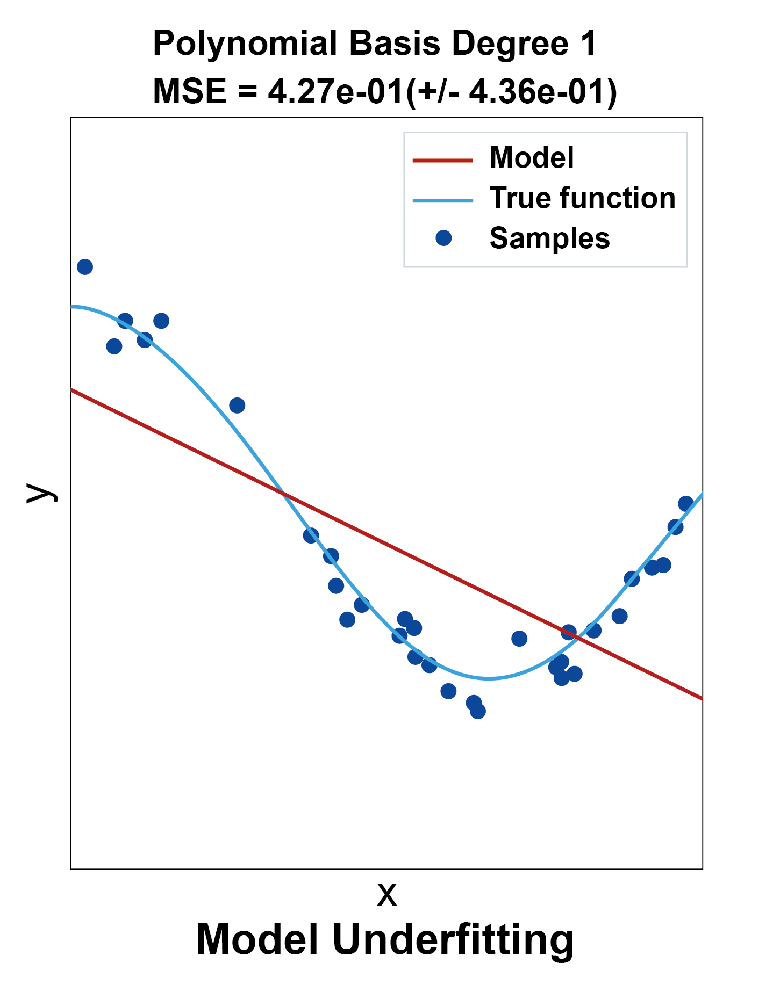
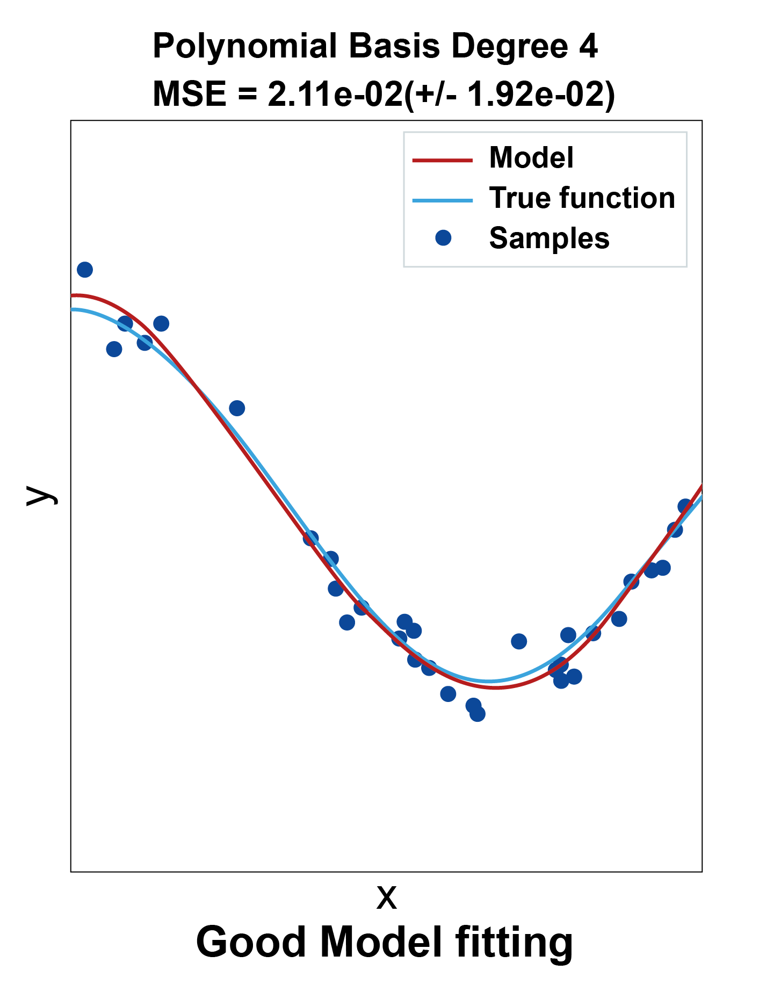
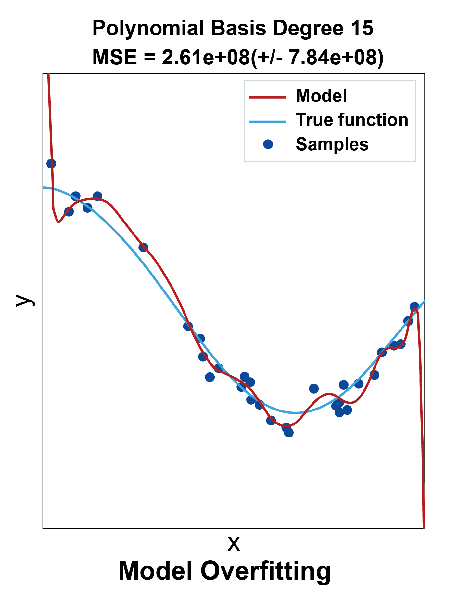
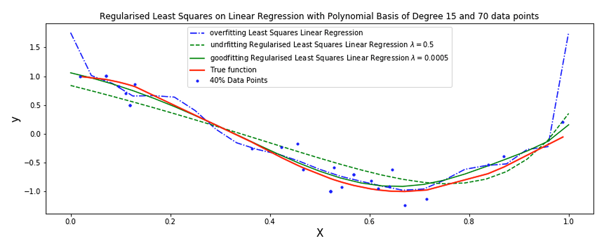
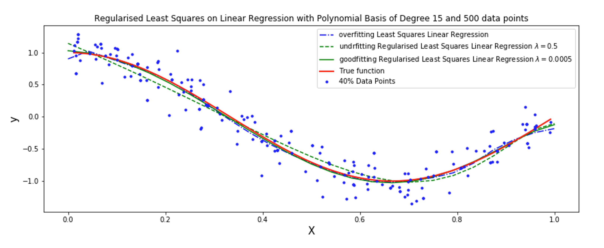

Regression models
Overfitting of regression models
Similar to classification models, regression models can suffer from overfitting. Linear regression models are relatively less exposed to this phenomenon because it is a simple regression model.
The more complex the model is the more exposed to overfitting. So a more complex regression model tends to be more exposed to overfitting. There is a famous principle called Occam's razor which roughly speaking states that we should prefer less complex model if they give us the capability that we want for our model and only use more complex models if necessary. Let us see an example of how overfitting and underfitting behaves in the context of a regression model, in figures 4.17-4.19.



The figures above show the effect behaviour of overfitting and underfitting on a linear model with a polynomial basis. The fitted function that we sampled the data from is a sin wave function.
As we can see the data (blues dots as usual) is non-linear (we cannot represent it with a straight line). We can see in the above figure that when the model is not sufficiently capable (such when we use no basis, which is considered a linear model with degree 1 polynomial basis) we get underfitting because the straight line underfits or is incapable of coming close enough to the actual dataset. When the model is too complex such as when we use a polynomial of degree 15 we get overfitting, because the model is trying to fit every single data point as perfectly as possible, the results is not great and the generalisation of both cases of overfitting and underfitting is poor. On the other hand when the model complexity is just right as in the middle with a polynomial of degree 4 we get an excellent approximation and the model generalisation ability is maximum.
Least squares for regression with regularisation
Regularising the weights helps suppress the weights from changing or growing too much. This often helps prevent the problem of overfitting. To add regularisation to our linear regression model we start by adjusting the loss function. We simply add a term that discourage the weights from growing. This can be done in few ways one of them is to add a magnitude \(\|\mathbf{w}\|\) of the weights inside the loss function to try to minimise it along with the error.
If these two terms seem to you to work against each other, you are right, it is the case, and this is precisely what we want. We want them to balance each other so that we do not end up fitting the data too much by changing the weights too much or growing the weights too large but at the same time we still want to reduce the differences between the predicted values and the actual values. As usual we square the magnitude of the weights vector to keep the terms nicely differentiable and we will multiply by a coefficient λ to be able to place more or less emphasis on one of the terms. Also, for differentiability and because these two terms are squared, we multiply by ½ to keep the resultant formula tidy and since it is not going to affect the direction of the changes only the magnitude. Note that \(\|\mathbf{w}\|^{2}=\mathbf{w}^{\top} \mathbf{w}\) which is useful for differentiation as well.
By taking the gradient and setting it to \(0\) we get:
If the matrix \(\left(\mathbf{\Phi}^{\top} \mathbf{\Phi}+\lambda \mathbf{I}\right)\) is invertible then the solution exists. The resultant algorithm is very similar to Algorithm 3, the only difference is that we change the calculation \(\mathbf{w}^{*}\) so that the inverse involve \(\lambda \mathbf{I}\), we will not include it here for brevity.
This technique is also called Ridge regression. See figure 4.20 below for how linear regression with polynomial basis of degree 15 overfitting problem can be brought under control using regularisation. The problem is contrived but because in the first place we should not be using that high degree polynomial in the first place, but it demonstrates the effect of regularisation. Note that the value of \(λ\) has a major effect of whether the model underfit or makes a good fit, this type of hyper parameters requires tuning which is a trial and error process and a time-consuming exercise. There are some ways to automate the process a bit. For example, one use grid search method to try out different values for \(λ\) and choose the optimal one as we saw previously in Unit 2.

Note in figure 4.21 how both the problems of underfitting of a regularised linear regression models and the overfitting of a linear regression model were greatly reduced when we increased the data from 70 to 500. Both figures show 40% only of the actual data. This illustrate an important aspect of modelling which is that the models are going to be much more resilient with more data and less resilient and more sensitive to overfitting and underfitting and outliers with less data.
